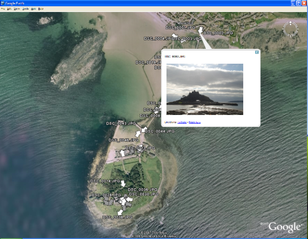

Mark Sanderson
IR Group - School of Computing Technologies - RMIT

Contact
Room 14.09.17,
School of Computer Science and Information Technology,
RMIT University,
GPO Box 2476, Melbourne 3001
Victoria, Australia
Tel: +61 3 992 59675
Fax: +61 3 9925 3748
Email: mark.sanderson@rmit.edu.au
Possible Master's projects.
MS-1: Advanced visualisation of photographs on Google Earth
As part of an on-going EU-funded research project, Tripod, we are capturing a large number of photographs where GPS, altimeter and compass information is recorded. So we know where the photographer was when a picture was taken and what direction they were looking at. Adding in information captured by the camera on the status of the lenses, it becomes possible to guess what is pictured in the photograph. I would like someone to take our collection of photographs and plot them onto GoogleEarth (and if possible GoogleMaps) and use all the captured metadata to come up with a creative way of plotting the photos. Plotting a camera icon on a map won't be good enough, using all the metadata, you should be able to guess the area photographed and indicate this on a map. You might guess the type of photo, night scene, landscape, urban, and indicate this also; there are a number of tricks we could explore. Evaluation of the outputs of this system would most likely be through a usability study.
We've done some preliminary work, which is pictured above. Each white arrow is a photograph; the arrow indicates the direction of the camera; the picture in the pop up looks south towards the castle on the island. I'm certain that it is possible to improve on this.
MS-2 Improving access to Online Public Access Catalogues (OPACS)
Interfaces to Library databases, such as those in our Institution, are usually thought of as being old fashioned and often rather complex, when compared to the modern search engines that we all use. However, the creators of these database systems are starting to open up their systems, creating public APIs and providing outputs in standardised forms (e.g. XML). In conjunction with Andy Bussey, the University Library Systems Manager, I am proposing a project to integrate OPAC technologies into a Web 2-style applications. The brief here would be to look forward to how such systems could be bettered with substantially improved interfaces.